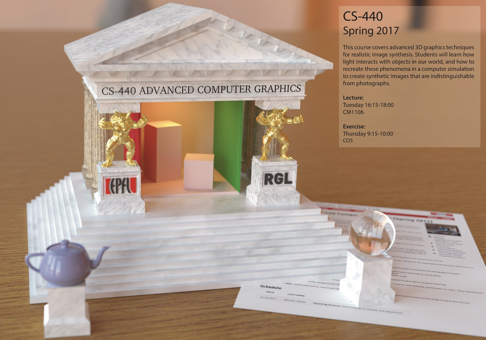

<!-- Content
    ==================================================
<main class="content" role="main">

{% for post in paginator.posts %}

  <article class="post">
      <h2 class="post-title"><a href="{{post.url}}">{{post.title}}</a></h2>
      <span class="post-meta">{{ post.date | date: "%B %d, %Y" }} 
        {{#if post.tags}} | Tags: 
          {% for tag in post.tags %} 
            {{tag}}{% unless forloop.last %},{% endunless %}
          {% endfor %}  
        {{/if}}</span>
      </header>
      <section class="post-content">
          <p>{{post.content}}</p>
      </section>
  </article>

{% endfor %}

<nav class="pagination" role="pagination">

  {% if paginator.previous_page %}
    {% if paginator.previous_page == 1 %}
      <a class="newer-posts" href="/">&larr; Newer Posts</a>
    {% else %}
      <a class="newer-posts" href="/page{{paginator.previous_page}}">&larr; Newer Posts</a>
    {% endif %}
  {% else %}
  {% endif %}
  <span class="page-number">Page {{paginator.page}} of {{paginator.total_pages}}</span>
  {% if paginator.next_page %}
    <a class="older-posts" href="/page{{paginator.next_page}}">Older Posts &rarr;</a>
  {% else %}
  {% endif %}
</nav>

</main>
-->
<main class="content" role="main">
 		<div class="content">
				<div align="center"
					<p><div class="caption">A path through a forest, rendered entirely with my hobby renderer, Takua Renderer. More info is available on my project pages and blog.</div>
				</div>
				<br>
                <div class = "frontpagerow">
                    <div class="frontpageleftbar">
                        <b>Hello, I'm Karl!</b>
                        <p>Born in Hannover, Germany and raised in Philadelphia, Pennsylvania, I am a senior software engineer at <a href="http://www.disneyanimation.com/">Walt Disney Animation Studios</a> working on Disney's <a href="http://www.disneyanimation.com/technology/innovations/hyperion">Hyperion Renderer</a>. As part of the Hyperion team, I've worked on every Disney Animation theatrical release starting from Zootopia. I am very happily married to <a href="http://harmonymli.com">Harmony M. Li</a>!

                        <p>My areas of interest cover all things production rendering, including topics such as advanced light transport, renderer architectures, raytracing on interesting hardware, volume rendering, surface appearance, and more.</p>
                        <p>I am also a Master of Science in Computer Graphics candidate at <a href="http://www.cornell.edu/">Cornell University</a>'s <a href="http://www.graphics.cornell.edu/">Program of Computer Graphics</a>. I did my undergraduate studies at the <a href="http://www.upenn.edu/">University of Pennsylvania</a>, where I was part of <a href="http://cg.cis.upenn.edu">CG@Penn</a> and a student at <a href="https://www.wharton.upenn.edu">The Wharton School</a>. Previously, I have also worked at <a href="http://www.pixar.com/">Pixar Animation Studios</a> and <a href="http://www.dreamworksanimation.com/">Dreamworks Animation</a>.</p>
                    </div>
                    <div class="frontpagerightbar">
                        <b>News:</b>
                        <p>2020.11.23: I was on <a href="https://www.chaosgroup.com/blog/yining-karl-li-senior-software-engineer-walt-disney-animation-studios">this week's episode of CG Garage </a> to talk about Hyperion and production rendering and other stuff.</p>
                        <p>2020.10.21: New <a href="https://www.youtube.com/watch?v=9BPMTr-NS9s">teaser trailer</a> for Raya and the Last Dragon is released!</p>
                        <p>2020.10.20: I got interviewed as a RenderMan <a href="https://renderman.pixar.com/featured-artists/yining-karl-li">featured artist</a>.</p>
                        <p>2020.07.31: New <a href="https://blog.yiningkarlli.com/2020/07/shipshape-renderman-challenge.html">blog post</a> about making my entry for Pixar's RenderMan 'Shipshape' Art Challenge.</p>
                        <p><a href="https://www.yiningkarlli.com/news.html">Older news...</a></p>

                    </div>
                </div>
		</div>   
    
    
</main>
      
      
      
